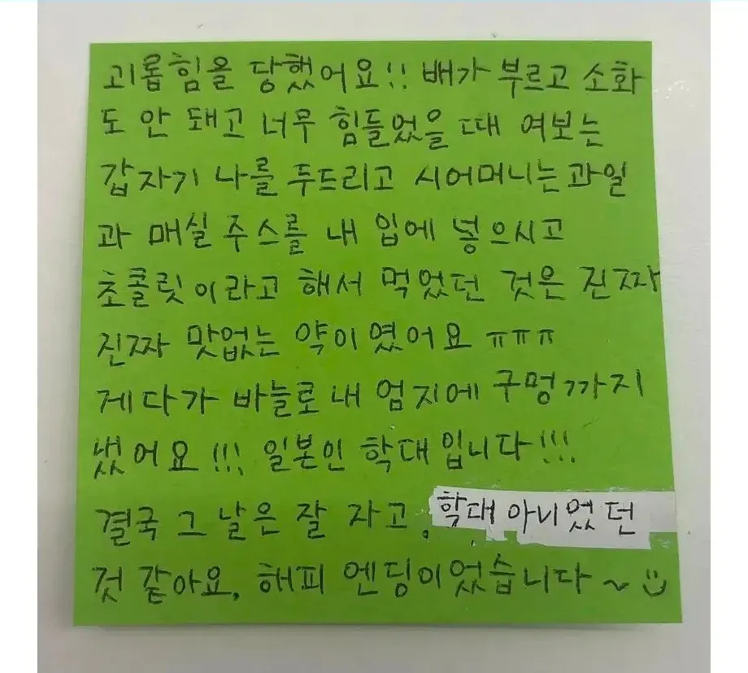

일본인 학대입니다
꺼어억
결국 그날은 잘 자고

일본인 학대입니다
꺼어억
결국 그날은 잘 자고
일본에서 일반인들이 먹나?
원래 정로환이 일본에서 만들어진거임
시중에도 파는거고
일본 약국에 잘 팔고 있음
우황청심환?
일제가 로서아(러시아) 정벌하러 갈때 만든 약이라 정로환임. 약간 발암물질이 들어있는 독성물질이라 알고있는데 (세균을 살균) 요즘은 성분을 좀 바꿨으려나
요즘 한국 정로환은 살균 성분은 빼고 나옴
그래서 정로환이구나
지식이 늘었다
급체 내려줌ㅋㅋㅋㅋ

잘먹고 체했네 ㅋㅋㅋㅋㅋ
약에 매실엑기스에 손까지 따다니.. 얼마나 체한거여;;
다 묵고가레이~
며느리 확대 ㄷㄷ;;
ㅋㅋㅋㅋㅋㅋㅋㅋㅋㅋ
옆에서 보기에도 잘먹었나보네 ㅋㅋㅋㅋㅋㅋ
수정테이프로 가려버린 진실 ㄷㄷㄷ
손따는거 진짜 신기하긴해 효과 죽임
나 어릴때 생물선생님이 알려줬던건데
체하는 이유가 스트레스를 받거나 급하게 먹으면 교감신경이 반응해서 위장 운동이 멈춰 버리는데 이때 손가락을 따면 교감신경에 자극을 줘서 다시 움직이게 하는 거라고 했음
쉽게 말하면 컴퓨터 멈췄을때 재부팅 하는거라고...
굳이 손가락 안 따도 되겠는데?
ai로 만든거같네
고전짤임
검열된거 뭐야
정로환은 소화제가 아니라 설사약(지사제)인데... 한방소화제 줬나보네. 한의원 가면 주는거.
근데 한방 소화제 먹으면 무조건 토하게 되던데 ㅠ
어쨌든 체한 건 해결되니 좋았쓰
학대x 확대o
체했네 ㅋㅋㅋㅋㅋㅋㅋㅋㅋ
초콜릿은 아마 정로환이 아닐지....
근데 그거 일본에도 있자나?